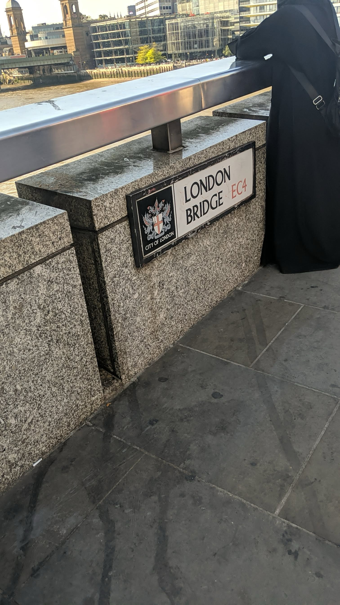
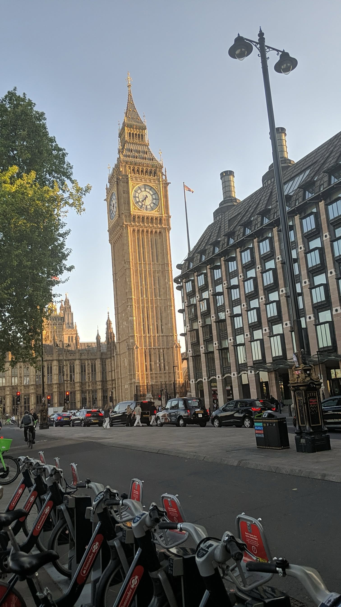

Welcome to my personal travel portfolio. This webpage highlights some of the countries and cities I have explored over the years. Travelling has allowed me to experience different cultures, foods, languages and lifestyles.
Each destination has taught me something unique. From the busy streets of London in the United Kingdom to the beautiful beaches of Australia, every journey has helped me grow personally and socially.
In Africa, I have visited Kenya, Tanzania, Uganda and South Africa. These countries are rich in culture and natural beauty. I enjoyed experiencing wildlife, local traditions and historical landmarks.
In Europe, I explored the United Kingdom, Scotland and Paris in France. The architecture, history and lifestyle were very different from what I am used to, which made the experience exciting and educational.
Travelling helps me learn about diversity and appreciate different perspectives. It improves my communication skills and increases my confidence when interacting with people from different backgrounds.
I look forward to visiting more countries in the future and continuing to document my experiences through photos and videos.
 